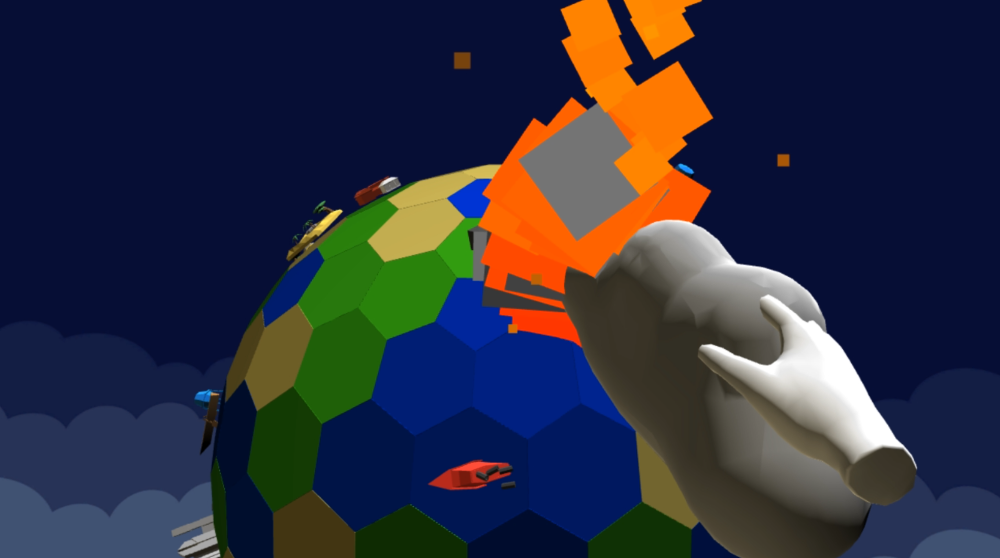
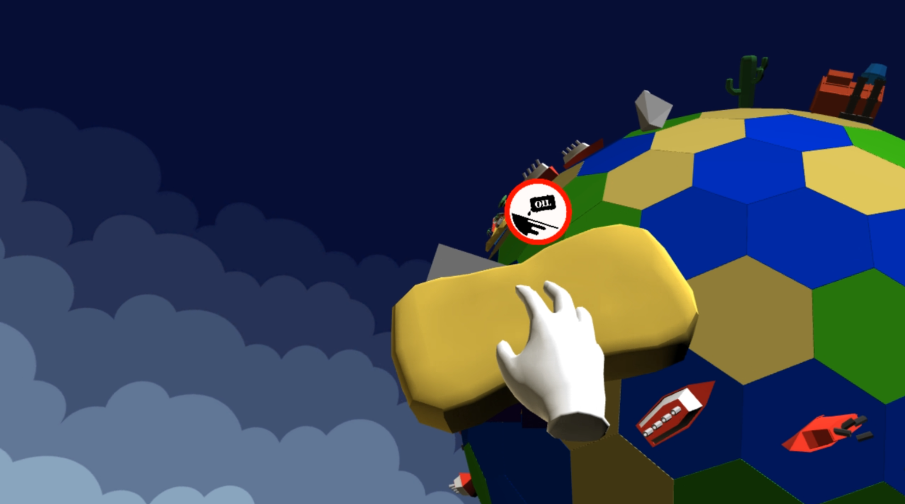

Planet Workshop
- Team project, developed as an entry to Global Game Jam 2020
- I was responsible for programming, working in a team of 9 people alongside another programmer and 7 artists
- Developed in Unity
- Made for VR
- Programmed the mechanics and logic of the game
The theme for Global Game Jam 2020 was "Repair". Our take on the theme was having the player repair planets in VR, by using a different tools for different types of disaster (e.g. a raincloud to stop a fire). We also adhered to GGJ's diversifier "Eco Action" (make a game that explores and/or inspires people to learn about and take environmental action about the climate).
I programmed most of the gameplay and mechanics, while the other programmer dealt with implementing VR. I made the game randomly generate planets made of tiles of different colors (biomes), with each biome spawning different random props (e.g. a ship on a water tile). The specified amount of disasters spawn on an appropriate prop (e.g. a fire on a tree). Each tool has a different behaviour in order to fix their respective disaster.
 